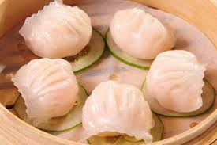

2、將豬肥膘切成小丁，再剁成肉泥備用，小蔥洗凈切成蔥花。
3、將蝦泥、肥膘肉、蔥花放入容器，加入少許糖、雞粉、鹽順同一方向攪勻上勁；蝦仁放少許鹽醃製20分鐘。
4、將150克澄粉、玉米澱粉50克、鹽1克混合拌勻，沖入130ml沸水，邊加邊攪拌，到沒有乾麵為止，蓋上蓋悶5分鐘。
5、取出搓勻透，再加豬油或（橄欖油）揉勻成團，待用。
6、取一小塊，搓成長條，切小段，擀成薄片。放入餡捏出摺痕。

小籠湯包 蟹黃燒賣 魚翅餃 心得感想